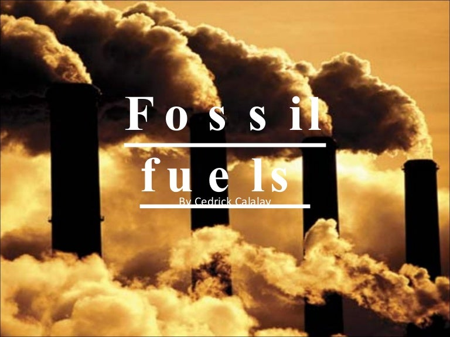
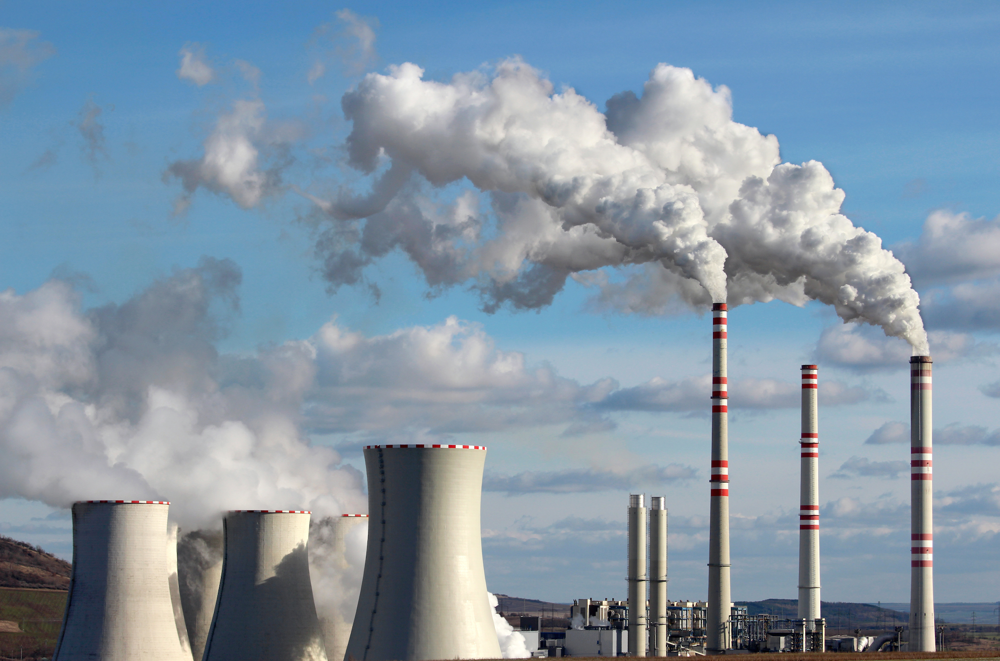
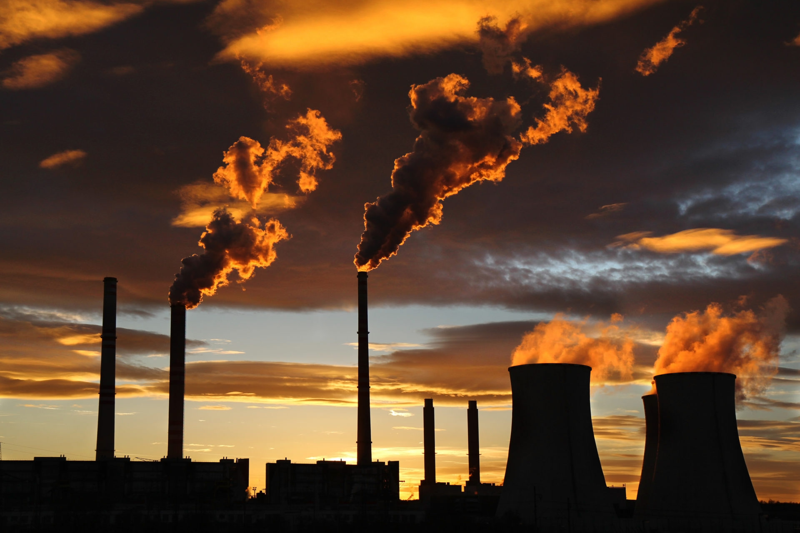
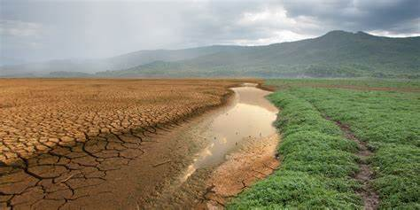
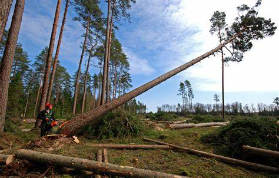

We and our partners use cookies on this site to improve the efficiency of the navigation, perform analytics, serve more relevant advertising content to you and measure advertising performance, provide social media features, and generally improve the user experience.
Climate change, or global warming, refers to the climate change in which
the temperature of the earth's atmosphere and ocean rises due to the
greenhouse effect over a period of t ime. It is one of the tragedies of the
commons, and its effect is called the global warming effect. In 2013, the
fifth assessment repo rt of the Intergovernmental Panel on Climate Change
concluded that "human impact is likely to be the main cause of the warming
observed since the middle of the 20th century." Human impacts include
the emission of greenhouse gases such as carbon dioxide, methane and
nitrous oxide. Given that human activities play a major role in global
warming, this phenomenon is sometimes referred to as "man-made global
warming" or "man-made climate change".
The climate model forecast in the
report summarizes that in the 21st century, according to the greenhouse
gas emissions, the global surface temperature is likely to rise further by
0.3-1.7 ° C to 2.6-4.8 ° C. These findings have been recognized by the
scientific academies of major developed countries, and no national
or international scientific institutions have raised objections to them.
The following is a graph about the average of global surface temperature during 1980-2021:
The warmer climate could affect our planet in a number of ways:
All of this evidence suggests a link between geophysical climate change and detrimental effects on mental health. Recently, however,there is increasing attention to the possibility of a more indirect effect: anxiety associated with perceptions about climate change, even among people who have not personally experienced any direct impacts. Popular media are full of stories about climate anxiety, eco-anxiety, and climate grief, to the extent that Grist magazine called climate anxiety the “biggest pop-culture trend” of 2019 (McGinn, 2019). This anxiety response is important to understand in part because of the range of potential sufferers: anyone who knows about climate change–in other words, given the reach of communications technology, almost everyone–could be affected by climate anxiety regardless of their own personal vulnerability or relative safety
Anxiety is not the only negative emotion associated with climate change – hopelessness, anger, and grief are also discussed–but it seems to be a particularly significantone in capturing the sense of worry and concern (cf. (Clayton, 2018). As such, it is worth giving some consideration to the nature of anxiety. Anxiety has been tied to sensitivity to negative outcomes and anticipated goal conflict, leading to active risk assessment and the inhibition of potentially conflictual behaviors (i.e., the BIS system;Corr, 2011). It is empirically distinguished from fear, although fear and anxiety often co-occur. According to Corr, it incorporates both automatic, nonconscious responses as well as higher-order, controlled reflection. Anxiety becomes maladaptive when the sensitivity to potential problems–differences between what is expected and what is encountered–is too great, triggering an emotional response and rumination that inhibit resolution of the anxiety.
What causes climate change?
1. The main cause - Burning Fossil Fuels



Over the past 150 years, industrialised countries have been burning large amounts of fossil fuels such as oil and gas. The gases released into the atmosphere during this process act like an invisible ‘blanket’, trapping heat from the sun and warming the Earth. This is known as the “Greenhouse Effect”.
2.Farming

Planting crops and rearing animals releases many different types of greenhouse gases into the air. For example, animals produce methane, which is 30 times more powerful than carbon dioxide as a greenhouse gas. The nitrous oxide used for fertilisers is ten times worse and is nearly 300 times more potent than carbon dioxide!
3. Deforestation

Forests absorb huge amounts of carbon dioxide – another greenhouse gas – from the air, and release oxygen back into it. The Amazon rainforest is so large and efficient at doing this that it acts like our planet’s air conditioner – limiting climate change. Sadly, many rainforests are being cut down to make wood, palm oil and to clear the way for farmland, roads, oil mines, and dams.
4. Natural changes to the climate
The leading cause of climate change is human activity and the release of greenhouse gases. However, there are lots of natural causes that also lead to changes in the climate system.
Natural cycles can cause the climate to alternate between warming and cooling. There are also natural factors that force the climate to change, known as 'forcings'. Even though these natural causes contribute to climate change, we know that they are not the primary cause, based on scientific evidence.
Fairtrade products can help make sure a farmer is paid a fair wage. This means they can cover their costs, earn enough money to have a decent standard of living, and invest in their farms to keep their crop healthy, without needing to resort to cheap methods of farming which can further damage the environment.
This support also helps farmers to replace eucalyptus trees – which take up a lot of water – with indigenous trees that are better for the farmers’ soil. They can learn to make fuel-efficient stoves which will not only make them a little extra money, but also reduce the carbon footprint of the community – cool!
Small changes in your own home can make a difference, too. Try switching to energy-saving lightbulbs, walking instead of using the car, turning off electrical items when you’re not using them, recycling and reducing your food waste. All these little things can make a difference. You can check out more eco-friendly ideas, in our top five conservation tips!